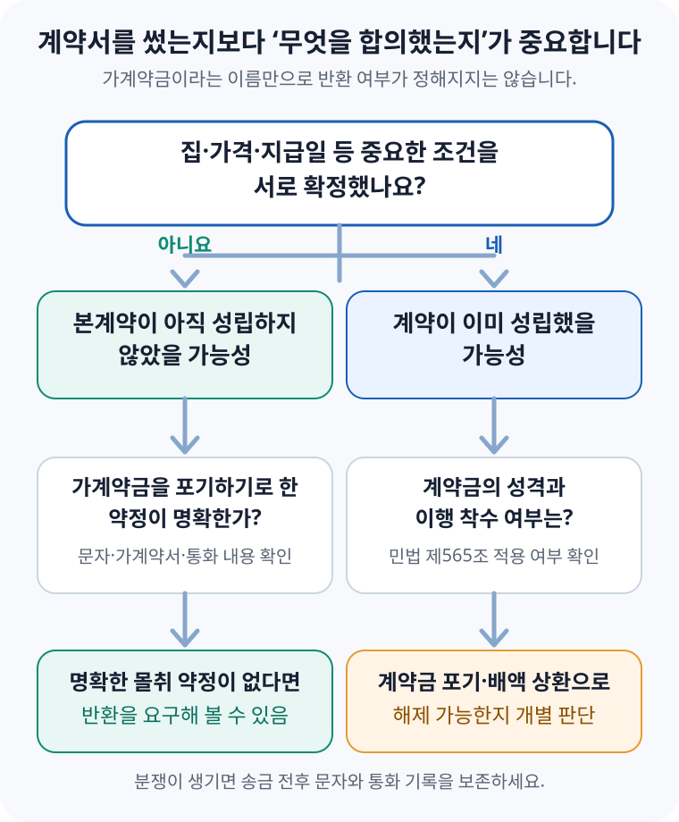

부동산 가계약금, 돌려받을 수 있을까? — 송금 전에 확인할 것
계약서를 아직 쓰지 않았다고 가계약금을 무조건 돌려받는 것도 아니고, 가계약금이라고 송금했다고 무조건 포기해야 하는 것도 아닙니다. 집과 가격, 대금 지급방법 같은 중요한 조건을 이미 합의했는지, 본계약을 하지 않으면 돈을 포기하기로 명확히 약속했는지를 함께 봅니다. 그래서 돈을 보내기 전에 반환 조건을 문자로 남기는 것이 가장 중요합니다.
가계약금은 법에 따로 정해진 이름이 아닙니다
마음에 드는 집을 발견하면 중개사에게 “다른 사람이 계약하지 못하게 일단 조금 보내 두세요”라는 말을 들을 수 있습니다. 이때 보내는 100만 원, 500만 원 같은 돈을 흔히 가계약금이라고 부릅니다. 하지만 민법에는 ‘가계약금’의 금액이나 반환 방법을 일률적으로 정한 조항이 없습니다.
따라서 통장에 ‘가계약금’이라고 적었는지만으로는 결론이 나지 않습니다. 실제로는 아래 가운데 어떤 상황이었는지를 확인해야 합니다.
| 송금 당시 상황 | 확인해야 할 핵심 |
|---|---|
| 집을 잠시 잡아 두려고 소액만 보냄 | 교섭 기한과 반환·몰취 조건을 따로 합의했는지 |
| 매매대금과 잔금일 등을 정한 뒤 계약금 일부를 먼저 보냄 | 이미 매매계약이 성립했고 약정 계약금의 일부를 낸 것인지 |
| 대출 가능 여부를 확인하는 조건으로 보냄 | 대출이 안 되면 반환한다는 조건을 상대방도 동의했는지 |
| 정식 계약을 하지 않으면 포기하기로 하고 보냄 | 가계약금을 해약금·위약금으로 삼는 약정이 명확한지 |
계약서를 안 썼는데도 계약이 될 수 있을까요?
그럴 수 있습니다. 매매계약은 반드시 종이 계약서에 서명해야만 성립하는 계약이 아닙니다. 민법 제563조는 한쪽이 재산권을 넘기고 다른 쪽이 대금을 지급하기로 약정하면 매매의 효력이 생긴다고 정합니다.
대법원 2005다39594 판결에서도 정식 계약서가 작성되지 않았더라도 매매 목적물과 매매대금이 특정되고 중도금 지급방법 등 중요한 사항에 합의했다면 계약이 성립할 수 있다고 봤습니다. 계약서가 없다는 사실은 중요한 사정이지만, 그것 하나만으로 “계약이 아니었다”고 단정할 수는 없습니다.
돌려받을 가능성이 있는 경우는 이렇습니다
아직 본계약의 중요한 조건이 정해지지 않았고, 가계약금을 돌려주지 않기로 한 약정도 명확하지 않다면 반환을 요구해 볼 수 있습니다. 특히 “오늘 하루만 보류해 달라”, “가족과 다시 보고 결정하겠다”는 정도의 교섭 단계였는지 살펴봐야 합니다.
대법원 2022다247187 판결은 가계약금을 해약금으로 보려면 정식 계약을 체결하지 않을 때 교부자는 이를 포기하고 수령자는 배액을 반환하기로 했다는 약정이 명백하게 인정돼야 한다고 봤습니다. 가계약금을 낸 사람이 스스로 본계약을 포기했다는 이유만으로 항상 그 돈이 상대방에게 귀속되는 것은 아니라는 뜻입니다.
- 중요한 조건이 남아 있던 경우 — 매매대금, 계약금 총액, 잔금일, 권리관계 처리 등을 계속 협의 중이었다.
- 반환 조건을 적어 둔 경우 — 대출 불가, 권리관계 확인 실패 등 특정 사유가 생기면 반환하기로 합의했다.
- 몰취 약정이 없던 경우 — 본계약을 하지 않으면 가계약금을 포기한다는 말을 문자·통화·서면 어디에도 남기지 않았다.
- 상대방이 조건을 바꾼 경우 — 합의한 가격이나 인도 조건을 매도인이 일방적으로 변경해 계약이 무산됐다.
다만 위 사정 가운데 하나가 있다고 자동으로 반환되는 것은 아닙니다. 돈을 보낸 시점의 전체 대화와 합의 내용을 함께 봐야 합니다.
이런 경우에는 반환이 어려울 수 있습니다
집과 가격, 대금 지급일 등 주요 조건을 확정했고 “매수인이 계약을 취소하면 가계약금은 반환하지 않는다”는 내용까지 동의했다면, 단순 변심이나 예상보다 낮은 대출한도를 이유로 돈을 돌려받기는 어려울 수 있습니다. 대출이 안 되면 반환한다는 조건을 미리 두지 않았다면 대출 문제는 보통 매수인 개인 사정으로 다뤄질 수 있기 때문입니다.
이미 매매계약이 성립했고 지급한 돈이 계약금으로 인정된다면 민법 제565조가 문제됩니다. 다른 약정이 없고 아직 어느 한쪽도 계약 이행에 착수하지 않았다면, 돈을 낸 쪽은 계약금을 포기하고 받은 쪽은 그 배액을 돌려주며 계약을 해제할 수 있습니다.
중도금 지급 등 이행에 이미 착수했다면 계약금 포기나 배액상환만으로 일방적으로 끝낼 수 없는 경우가 생깁니다. 위약금 특약이나 상대방의 채무불이행이 있다면 손해배상 문제도 별도로 검토해야 합니다.
송금 전 문자에는 무엇을 남겨야 할까요?
“가계약금 500만 원 보냅니다” 한 줄만 남기면 분쟁이 생겼을 때 서로 다른 기억을 주장하게 됩니다. 적어도 아래 항목은 상대방 또는 권한을 확인한 중개사를 통해 한 번에 정리하고, 상대방의 동의 답변을 받은 뒤 송금하세요.
| 남길 내용 | 예시 |
|---|---|
| 거래할 집 | 주소와 동·호수 |
| 가격과 대금 일정 | 매매대금, 계약금 총액, 중도금·잔금액과 날짜 |
| 이번 송금의 성격 | 가계약금인지 약정 계약금의 일부인지 |
| 정식 계약 일정 | 계약서 작성 날짜·장소 |
| 반환·몰취 조건 | 누가 어떤 사유로 취소하면 얼마를 반환하거나 포기하는지 |
| 조건부 계약 | 대출, 등기부 권리관계, 임차인 명도 등 확인 실패 때 처리 |
문자는 다음처럼 시작할 수 있습니다. 이 문구 자체가 모든 거래에 맞는 계약서는 아니므로, 실제로 합의한 내용만 적고 상대방이 “확인했다”고 답한 기록을 남기세요.
“아래 조건을 서로 확인한 뒤 500만 원을 송금합니다. 물건: ○○아파트 ○동 ○호, 매매대금: ○억 원, 정식 계약일: ○월 ○일, 계약금 총액: ○원. 대출 ○원 미만 승인 또는 등기부상 새로운 권리 발생 시 전액 반환하며, 그 밖의 본계약 불발 때 가계약금 처리 방법은 ○○로 합니다.”
‘대출이 안 되면 반환’처럼 모호하게 쓰기보다 필요한 최소 대출액, 확인할 기한, 어떤 자료로 불가를 판단할지까지 합의하면 분쟁을 줄일 수 있습니다. 매도인 명의 계좌인지, 대리인이 받는다면 적법한 위임이 있는지도 송금 전에 확인해야 합니다.

이미 가계약금을 보냈다면 지금 확인하세요
마음이 바뀌었다면 먼저 “계약을 취소하겠다”고 단정적으로 보내기보다, 송금 전후 기록을 모아 현재 합의 상태부터 확인하는 편이 좋습니다. 섣불리 계약 포기 의사를 확정해 보내면 나중에 반환을 주장할 때 불리한 자료로 다뤄질 수 있습니다.
- 전체 대화를 보존합니다. 문자·메신저를 캡처하고, 통화 녹음과 송금내역 원본을 따로 저장합니다.
- 확정된 조건을 적습니다. 물건, 가격, 계약금, 대금일정, 정식 계약일, 특약 가운데 서로 동의한 내용과 아직 협의 중인 내용을 나눕니다.
- 가계약금 처리 약정을 찾습니다. 매수인 포기, 매도인 배액상환, 반환 조건을 실제로 합의했는지 확인합니다.
- 중개사의 설명도 확인합니다. 중개사가 전달한 내용이 누구의 의사였는지, 상대방에게 실제 전달되고 동의됐는지 구분합니다.
- 분쟁 금액이 크면 서면 통지 전에 상담합니다. 계약 성립과 해제 사유에 따라 반환뿐 아니라 추가 손해배상 문제가 생길 수 있습니다.
같은 500만 원이라도 결론은 달라질 수 있습니다
매수인 A가 8억 원짜리 아파트를 보고 매도인 계좌로 500만 원을 보냈다고 가정해 보겠습니다.
이 사례의 핵심은 금액이 아니라 500만 원을 보낼 때 어떤 약속을 했는지입니다. 실제 사건에서는 대화의 순서, 상대방의 답변, 중개사의 전달 내용, 지급 목적을 모두 확인합니다.
가계약금 송금 전 체크리스트
- □ 등기부상 소유자와 입금 계좌의 명의를 확인했다.
- □ 아파트 주소·동·호수와 매매대금을 문자로 확인했다.
- □ 계약금 총액과 이번에 보내는 돈의 성격을 구분했다.
- □ 계약서 작성일, 중도금·잔금일을 합의했는지 확인했다.
- □ 매수인 또는 매도인이 취소할 때 돈을 어떻게 처리할지 적었다.
- □ 대출·권리관계 등 반환 조건이 필요하면 구체적인 금액과 기한을 적었다.
- □ 중개사의 구두 설명만 믿지 않고 상대방의 동의 답변을 남겼다.
- □ 확인 전에는 ‘일단 보내고 보자’며 송금하지 않았다.
공식 자료 및 참고자료
- 국가법령정보센터 — 민법 제563조(매매의 의의)
- 국가법령정보센터 — 민법 제565조(해약금)
- 대한민국 법원 — 부동산 매매 가계약금, 돌려받을 수 있을까?
- 국가법령정보센터 — 대법원 2005다39594 판결
- 국가법령정보센터 — 대법원 2022다247187 판결
- 국가법령정보센터 — 대법원 2014다231378 판결
- 찾기쉬운 생활법령정보 — 부동산 계약하기
정보 기준일: 2026-09-05. 이 글은 일반적인 정보 제공용이며 개별 계약에 대한 법률 자문이 아닙니다. 가계약금 반환 여부는 실제 대화와 약정, 계약 진행 정도에 따라 달라질 수 있으므로 분쟁 금액이 크거나 상대방과 주장이 다르면 법률 전문가에게 자료를 보여 주고 확인하세요.
계약 전에 같이 확인할 도구
- 매매 잔금일 체크리스트계약부터 잔금·등기까지 준비할 일을 순서대로 확인
- 부동산 종합 계산기매수자금과 세금·부대비용을 계약 전에 계산